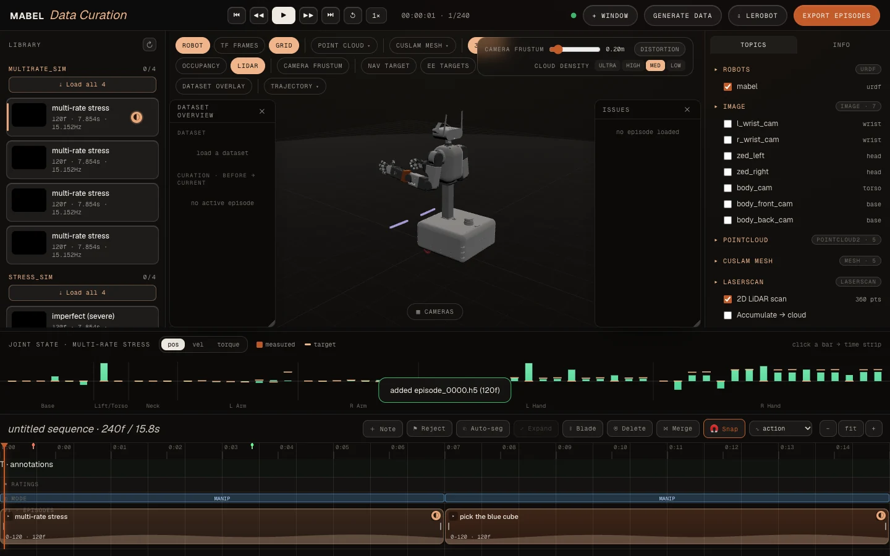
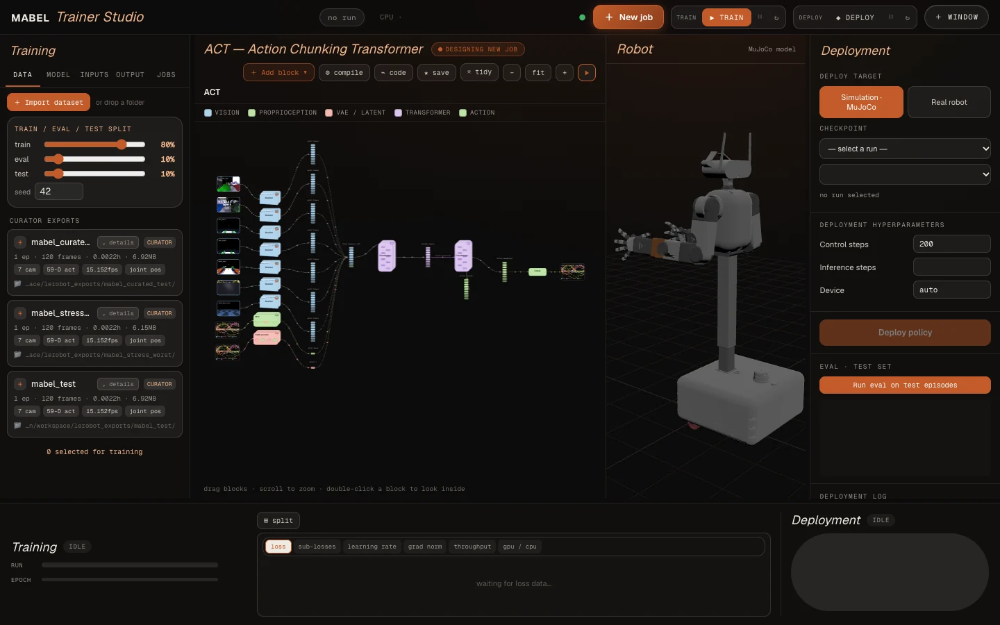

Hand-grasping demonstrations, from recording to ACT deployment.
Synchronized camera views, measured state and commanded references.
Review synchronized cameras and robot state. Trim takes. Export to LeRobot.

Open Data Curation ↗ReviewCameras and robot state share one timeline.
CurateKeep useful intervals; preserve the source.
ExportPrepare aligned LeRobot episodes.
Build the policy graph, choose data and inspect training runs.

Open Training Studio ↗ObserveHead and wrist images plus state history.
PredictACT produces 120 reference steps.
EvaluateSplit whole takes into train, validation and test.
Observe again, re-plan and execute through the shared whole-body controller.
Wheel and visual odometry, lidar mapping and Nav2 goals enter the shared command path.